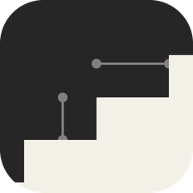

Y³ StudioDIDIM
설계 초기에 쓰는 계단 계산기. 층고를 넣으면 단수·단높이·단너비와 상부 개구부를 계산하고, 손스케치 평면·단면으로 보여 줍니다.
자주 묻는 질문
단수는 어떻게 정하나요?
자동 모드는 단높이 170 mm에 가깝게 단수를 정하고, 2h + l = 630 mm가 되도록 단너비를 5 mm 단위로 맞춥니다. 단수는 −/+로 바꿀 수 있고, 수동 모드에서는 단수와 단너비를 직접 지정합니다.
적합·부적합은 무엇을 기준으로 하나요?
2h + l만 독일 DIN 18065의 보폭 규칙(590~650 mm)으로 판정합니다. l − h와 l + h는 목표값(120, 460)과의 차이만, 경사각은 22~45° 범위 안팎만 표시합니다. 각국 법규 적합 여부는 직접 확인해야 하며, 기준 탭의 국가별 참고표를 함께 보시면 됩니다.
상부 개구부 길이는 어떻게 계산하나요?
디딤판 코를 이은 선과 계단참 바닥에서 유효높이(기본 2,100 mm)를 확보하도록, 위층 천장 마감면과 만나는 지점부터 개구부로 봅니다. 바닥 총두께는 마감·슬래브·천장반자를 모두 더한 값입니다. ㄱ자·U자는 구간별 단면 두 장에서 각각 계산합니다.
계단 폭과 계단참 길이
벽·구조체 사이 안목 치수입니다. 난간이나 별도 손잡이를 두면 유효폭은 그 안쪽으로 다시 산정해야 하므로, 설치 여부에 따라 필요한 유효폭보다 큰 값을 넣어 주세요.
스케치를 저장하거나 보내고 싶어요
평면·단면 버튼 오른쪽의 공유 버튼을 누르면 지금 보이는 스케치를 이미지로 저장하거나 보낼 수 있습니다.
무료 체험과 구매
설치 후 14일 동안 모든 기능을 쓸 수 있습니다. 체험이 끝나도 직선 계단 자동 계산과 평면·단면 스케치, 이론·기준은 계속 무료이며, 수동 모드·ㄱ자·U자 계단·상세 설정·최근 계산 저장은 한 번 구매로 계속 쓸 수 있습니다. 구독이 아닙니다. 다른 기기에서는 구매 화면의 구매 복원을 누르세요.
문의
y3_studio@naver.com · 개인정보처리방침
English
DIDIM is a stair calculator for early design. Enter the floor height to get the number of steps, riser, tread and floor opening, shown as hand-drawn plan and section sketches.
How are steps chosen?
Auto mode aims for a 170 mm riser and rounds the tread to 5 mm so that 2h + l = 630 mm. Adjust steps with −/+, or set steps and tread yourself in manual mode.
What is checked?
Only 2h + l is checked, against the DIN 18065 step rule (590–650 mm). l − h and l + h show the difference from 120 and 460, and pitch shows whether it is within 22–45°. Always check your local code; the Codes tab lists major references.
Floor opening
The opening starts where the headroom (default 2,100 mm) above the nosing line and landings meets the finished ceiling of the floor above. L- and U-shaped stairs are checked on two sections, one per flight.
Stair width and landing length
These are clear dimensions between walls or structure. A handrail or separate grab rail narrows the effective width, so enter a larger value depending on what you install.
Trial and purchase
All features are free for 14 days. Afterwards straight-stair auto calculation, the sketches, Theory and Codes stay free; manual mode, L- and U-shaped stairs, advanced settings and recent calculations are a one-time purchase, not a subscription. Use Restore purchase on the purchase screen on another device.
Contact: y3_studio@naver.com · Privacy Policy